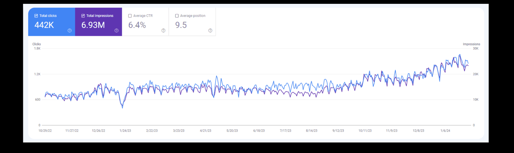
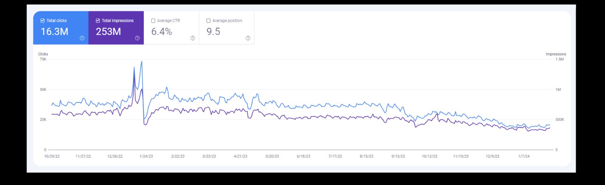
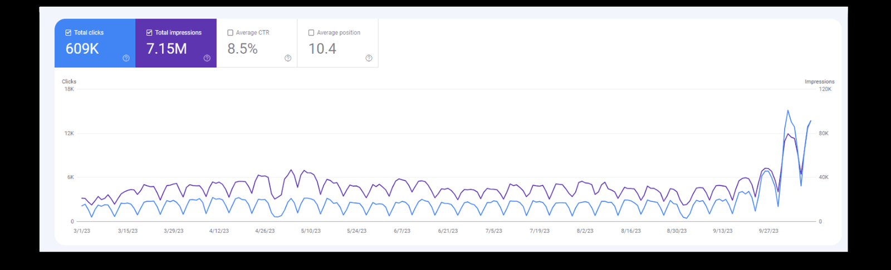
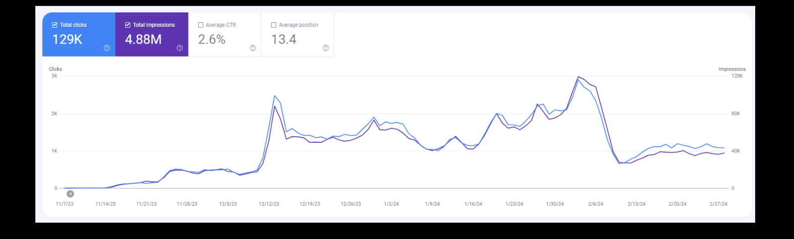

Case note · 03

Phibious: enterprise SEO for Bridgestone, Cleanipedia and Schneider Electric
Apr 2023 – Dec 2024 · Enterprise / Agency · SEO Manager
SEO Manager. I led SEO and content strategy for enterprise clients, focused on technical SEO, AI-assisted content and strategic site migrations, working directly with product and development teams rather than around them.
At a glance
Headline figures from the Phibious accounts
-
70%
Schneider Electric target keywords in position 1
Schneider Electric · Phibious, Apr 2023 – Dec 2024
-
16M
Cleanipedia visitors against a 14M annual KPI
Cleanipedia (Unilever) · 2023
-
1.5x
Faster site performance after the Threexfive migration
Threexfive (Dep365) · post-migration
01 — The situation
What was the situation at Phibious?
At Phibious I was SEO Manager on the agency side from April 2023 to December 2024, working across enterprise accounts: Bridgestone, Cleanipedia (Unilever), Schneider Electric and Threexfive (Dep365).
Multinational brands with large sites, real engineering teams, and CMS platforms I did not control — Colorful, Strapi and Adobe across different accounts.
Enterprise SEO at this scale is mostly not keyword work. It is migrations, platform constraints, and getting a change through a release process that was not designed with search in mind.
02 — The constraint
What was the constraint on these accounts?
Three constraints repeated across every Phibious account, and none of them were keyword problems.
The first is that I could not ship. Every technical change went through the client’s product and development teams, on their roadmap. That means a recommendation is only as good as the case made for it, and vague recommendations do not get built.
The second is scale. At a million-plus monthly visits, an error does not stay small. A template-level mistake is a site-wide mistake within one deploy.
The third is that some of these accounts were defensive. Holding 1.5M monthly visits is a different job from growing 30k, and it is judged more harshly, because nobody congratulates you for a flat line.
03 — The accounts
What did I do on each account?
Each Phibious account had its own objective, so the work is set out per account rather than as one programme.
Bridgestone — 30k to 50k organic in three months
At Bridgestone I grew organic traffic from 30,000 to 50,000 in three months. The account brief was a content strategy aligned to the site’s goals, with technical issues holding back performance addressed in parallel, aimed at conversion rate growth and brand awareness in the target audience — with a stated objective of a 100% increase in KPIs.
![Technical SEO audit tracker for Bridgestone: a numbered issue register with Type and Frequency columns listing XML sitemaps missing or erroring in Google Search Console, sitemaps not reflecting valid URLs, error pages not returning 404, internal links pointing to 4XX or 5XX, multiple URLs returning the same content, wrongly canonicalised pages, important pages more than 4 clicks from the homepage, orphan pages, title tags over 60 characters, short titles and duplicate titles, each set to a monthly or bi-weekly check.](../assets/img/work/bridgestone-technical-audit.png)
Bridgestone organic traffic per month, before and after
30k 50k
Bridgestone · 3 months

Cleanipedia — 16 million visitors against a 14 million KPI
Cleanipedia is Unilever’s cleaning advice property. The 2023 KPI for website traffic was 14 million visitors for the year. We finished at 16 million.
At its peak the site ran at about 1.5M visits a month, and the 2023 total was 16 million visitors against the 14 million target. Those two do not multiply into each other — 1.5M every month would be 18M — because 1.5M is the high-water mark rather than the year’s average, which was nearer 1.33M a month. The core objective here was content quality — making sure the content was delivered to the customer in the best form — rather than chasing new keyword territory.
Beating a 14 million annual target by 2 million is the clearest example on this site of working to a number somebody else set, in public, with a deadline.
Cleanipedia (Unilever) · 2023 annual KPI and outturn

Schneider Electric — 70% of target keywords in position 1
I ranked Schneider Electric at 70% top-1, 20% top-5 and 10% top-10.
Read that distribution rather than the headline. Seventy percent in position one, with the remainder still inside the top ten, means the visibility is not stacked on a couple of lucky terms — it holds across the set.
Schneider Electric (se.com) · Phibious, Apr 2023 – Dec 2024

Threexfive (Dep365) — site performance improved 1.5x after migration
I improved Threexfive (Dep365) site performance 1.5x post-migration. Migrations are where enterprise SEO is usually lost, so coming out of one measurably better than going in is the outcome I was after.
Threexfive (Dep365) · post-migration

Analysis in BigQuery and Google Cloud
I ran advanced analysis in BigQuery and Google Cloud across these accounts, and managed the Colorful, Strapi and Adobe CMS platforms they ran on. At enterprise data volumes the analytics UI stops being sufficient, and the questions worth asking are the ones you have to write SQL for.
04 — Measured results
What were the measured results?
Andrew Hoang, SEO Manager at Phibious from April 2023 to December 2024, grew Bridgestone’s organic traffic from 30,000 to 50,000 monthly visits in three months and maintained Cleanipedia at 1.5 million monthly visits.
| Account | Metric | Result | Source of truth | Timeframe |
|---|---|---|---|---|
| Bridgestone | Organic traffic | 30,000 → 50,000 / month | Analytics reporting | 3 months |
| Cleanipedia (Unilever) | Annual visitors against KPI | 16M against a 14M KPI | Analytics reporting | 2023 |
| Cleanipedia (Unilever) | Monthly visits | Maintained at 1.5M | Analytics reporting | Apr 2023 – Dec 2024 |
| Schneider Electric | Target keyword distribution | 70% top-1, 20% top-5, 10% top-10 | Rank tracking | Apr 2023 – Dec 2024 |
| Threexfive (Dep365) | Site performance | Site performance improved 1.5x post-migration | Site performance measurement | Apr 2023 – Dec 2024 |
05 — How it was measured
How were the results measured?
Every Phibious figure on this page traces to one of two documents — my résumé record of the engagement and my portfolio deck — and each row in the table above carries the window it covers. Where the exact reporting platform is not recorded, the table says “analytics reporting” rather than naming a tool I cannot verify.
Two of the numbers are different kinds of claim. Bridgestone’s 30,000 to 50,000 is growth over three months. Cleanipedia’s 1.5 million monthly visits is a peak figure held rather than moved, and the 16 million is an annual total measured against a target Unilever set before the year started. They are different units on different windows, which is why the page states both rather than deriving one from the other.
Schneider Electric’s 70% / 20% / 10% is a distribution across a defined set of target keywords, not across every keyword the domain ranks for. Read that way it is a visibility claim with a denominator, which is the only kind worth making.
06 — In hindsight
What would I do differently?
I would argue harder for a business KPI instead of a traffic KPI
Cleanipedia’s 2023 target was 14 million visitors and we delivered 16 million. It was a good year. But visitors is a proxy, and I could not tell you from that number what those two million extra visits were worth to Unilever. On an account with that much leverage I would now push for a target tied to a commercial outcome, even if it is harder to hit and harder to look good against.
I would build the technical case in the client’s own terms before asking for the build
Every fix on these accounts had to clear someone else’s roadmap. The recommendations that got built fastest were the ones where I had already quantified the cost of not doing them. I would make that the default for every request rather than the exception for the big ones.
I would set per-template performance baselines before a migration, not after
Threexfive came out at 1.5x the previous performance figure, which is the right direction. My source records that as “site performance improved 1.5x” without naming the metric, so I am not going to restate it as a speed claim: a score rising 1.5x and a load time falling by a third are different results. But post-migration measurement tells you what happened, not what specifically caused it. Baselining each template beforehand makes the recovery diagnosable instead of just observable.
07 — Next
Next
Permate is the opposite problem: a marketplace launched into organic from zero rather than an enterprise site held at scale. If you are hiring, the roles are listed on the about page. If you have an account that needs this kind of work, see what I take on or get in touch.